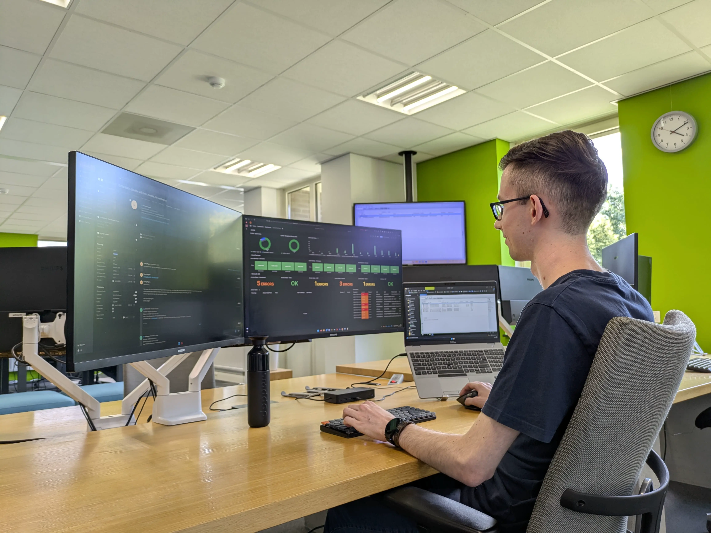
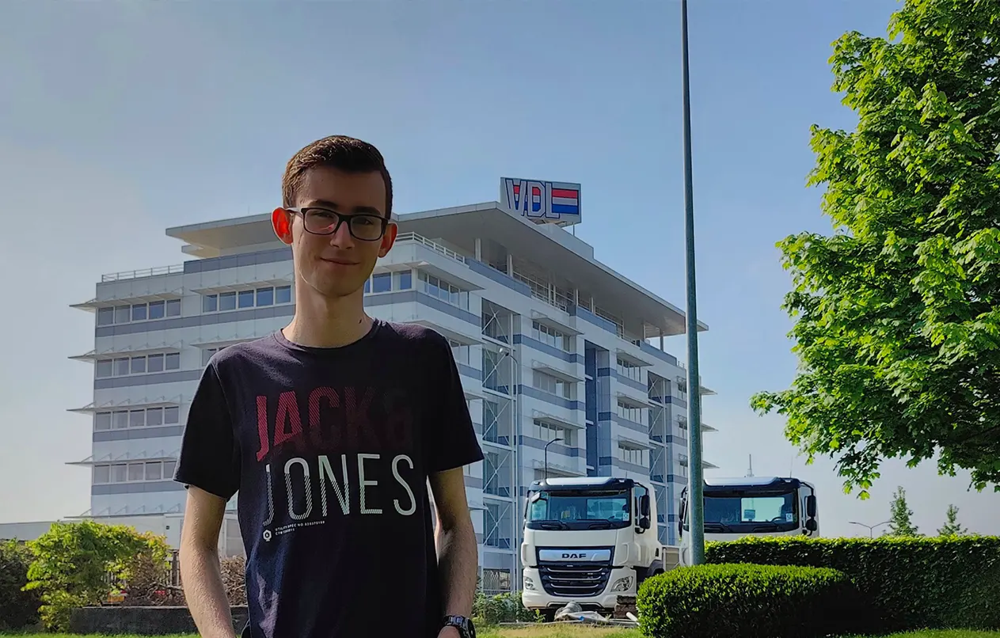
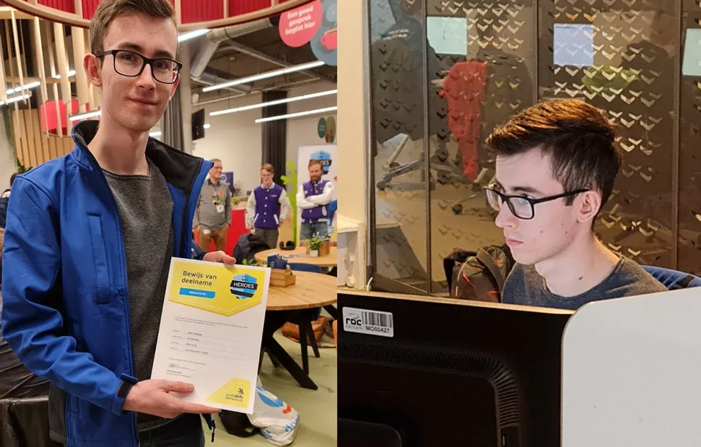
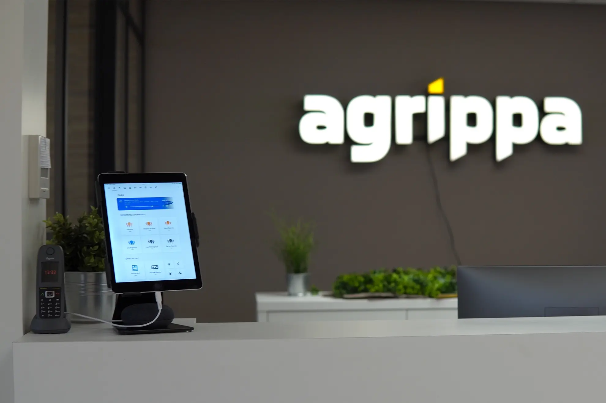
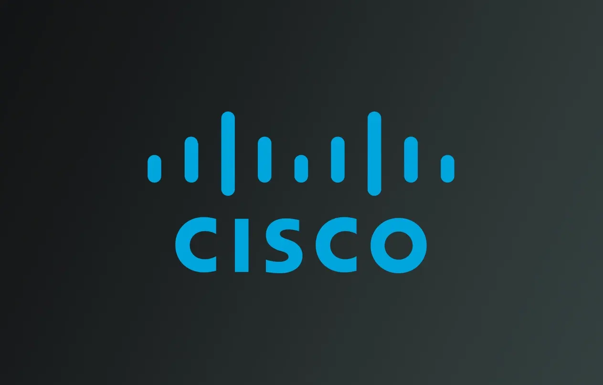
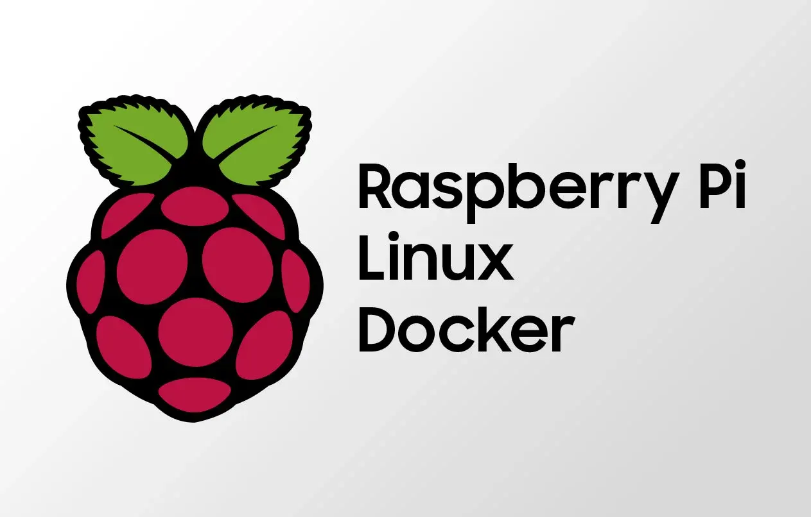

Stage Advantive
calendar_today Februari – Juli 2025In het laatste leerjaar van de opleiding 'AD-ICT' in de richting Infrastructuur bij het Fontys heb ik een halfjaar stage gelopen bij Advantive. Tevens heb ik hier mijn afstudeerproject uitgevoerd.

Stage VDL
calendar_today Februari – Juni 2023In het laatste leerjaar van de opleiding 'Expert IT systems & devices' heb ik een halfjaar stage gelopen bij VDL Nederland. Tevens heb ik hier mijn examen opdrachten afgerond.

Skills Heroes
emoji_events 2022 – 2023Tijdens mijn MBO 4 opleiding heb ik meegedaan aan de landelijke ICT-beheerders wedstrijd voor MBO. Dit wordt jaarlijks georganiseerd door Worldskills Netherlands.

Stage Agrippa
calendar_today September 2021 – Februari 2022In het tweede leerjaar van de opleiding 'Expert IT systems & devices' heb ik een halfjaar stage gelopen bij Agrippa. Hier heb ik Home Assistant ingesteld voor domotica.

Certificeringen
verified AZ-900, MD-102, MS-102, CCNABij Advantive heb ik verschillende Microsoft certificaten behaald. Tijdens mijn opleiding heb ik ook CCNA certificaten behaald.

Homelab
dns Linux, Docker, KubernetesIn mijn vrije tijd vind ik het leuk om te werken met Linux, Docker en Kubernetes. Ik heb een eigen homelab opgezet met diverse services.